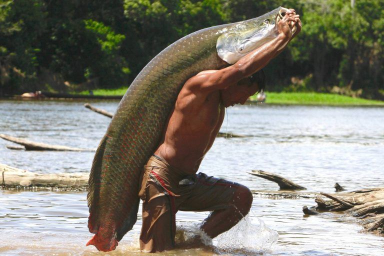

Pirarucu
O Pirarucu é um dos maiores peixes de água doce do mundo, seu tamanho pode variar de 2 a 3 metros e chegar a cerca de 200 quilos. Nativo da Amazônia ele promove benefícios para a comunidade e para o ecossistema, o Pirarucu como característica adaptativa possui dois aparelhos respiratórios, constituído por brânquias e por uma bexiga natatória que serve de pulmão para uma respiração aérea.
Alimentação
Sanando a forma em que obtém alimento, o Pirarucu é um animal onívoro, se alimenta desde plantas até mesmo de animais como vermes, insetos, moluscos, crustáceos, peixes, anfíbios e répteis. O Pirarucu por meio da osmorregulação controla a concentração de sais em seu organismo, graças à osmorregulação o eles conseguem se manter vivos em um meio hipotônico como a água.
Reprodução
Durante períodos de seca os Pirarucus formam casais, os machos nessa época desenvolvem uma coloração mais avermelhada em suas nadadeiras. Antes da fêmea depositar os ovos, o macho limpa o local, retirando as raízes e outros empecilhos com sua mandíbula. A reprodução do Pirarucu ocorre entre dezembro e maio, cada fêmea pode pôr cerca de 180 mil ovos, os ovos eclodem próximo ao quinto dia e logo após as larvas nadam próximos a cabeca do pai, o desenvolvimento embrionário se baseia na fase zigótica onde permanece nela até que ocorra a primeira divisão celular, logo depois passa-se para a fase de segmentação, essa fase começa quando a primeira divisão do zigoto ocorre, e é uma segmentação meroblástica. Isso acontece porque os ovos dos peixes têm um vitelo que limita a área onde o embrião pode se desenvolver. Partindo para a terceira fase, ocorre o rearranjo das células através de movimentos morfogenéticos assim possibilitando com que todas tenham a mesma informação. E por fim a fase de diferenciação, os órgãos específicos que permitam a identificação do novo indivíduo aparecerem. Nesta fase de diferenciação, aparecem as vesículas cefálicas (cérebro), ópticas (olhos) e o blastóporo (ânus).Gradualmente, os ossos da coluna vertebral, os músculos e os outros órgãos também se formarão.
Sistema Circulatório
Explanando sobre o sistema circulatório do pirarucu, ele é um sistema simples, onde o sangue passa apenas uma vez por ciclo no seu coração, e é um sistema fechado, pois o sangue passa apenas nos vasos e não tem outras cavidades. O sistema nervoso do Pirarucu é presente, e é dividido em sistema nervoso central, que é formado por encéfalo e medula espinhal; e sistema nervoso periférico que é formado por nervos cranianos, nervos espinhais e gânglios.
